L'onboarding codé, face aux maquettes validées
Code des lots 0 à 8, joué le 23.11.2026 au téléphone (390 px) sur la base locale du chantier. En face : les maquettes que tu as validées (v3 pour le guide du commercial, v5 pour l'aide à la vente, v6 pour la part du commercial, parcours v4 de l'administration pour l'écran de fin). Cette page montre seulement les écarts ; ce qui suit la maquette n'y est pas repris. Sous chaque écart qui demande ton avis : tes boutons et un commentaire. « Copier le texte », en bas, rassemble tes réponses pour la conversation.
Les douze lots
| Lot | Ce qu'il fait | État |
|---|---|---|
| 0 | Traceur : l'anneau et la bulle du guide sur « Offres », le moteur du guide | fait |
| 1 | Migration : trois colonnes sur le compte (guide de l'artisan vu, guide de l'équipe vu, démo d'entraînement) | fait, pas encore jouée sur le test |
| 2 | Fin de démo : dictée et imports refusés après la date de fin, écran de fin, fenêtre des deux derniers jours, attente sans promesse de courriel | fait, écart 1 |
| 3 | Guide de l'artisan : micro, conseils, « Terminer », attente, trois repères, « Compris » ; « Revoir le guide » dans « Plus » | fait |
| 4 | Mise en route en cinq étapes : entreprise et IBAN, TVA en quatre boutons, logo, modèle et couleur en blocs, « Vos prix » | fait, écart 8 |
| 5 | Avertissement avant d'envoyer une offre qui porte encore « Démo Peintre », avec « Envoyer quand même » | fait |
| 6 | Aide à la vente dans /admin, imprimable | fait, écarts 6 et 7 |
| 7 | Suivi du commercial : ses démos en cours (courriel du prospect, ouverture, offres, jours restants), ses chiffres | fait |
| 8 | Arrivée du commercial : trois écrans de bienvenue, guide de dix gestes, vraie démo d'entraînement, retour dans son espace sans mot de passe | fait, écarts 2 à 5 |
| 9 | La part du commercial : 10 %, taux propre par commercial, l'annuel sur une ligne « En plus » | bloqué : il faut d'abord les paiements (lot B3 de l'administration) |
| 10 | « Demander de l'aide » et l'écran de fin mènent à « Aide et questions » | bloqué : la page du chantier support n'existe pas encore |
| 11 | Vérification, revue du code par quatre relecteurs, recette | revue faite ; recette à toi sur le test |
Ce qui suit la maquette, pour mémoire
Quatre écrans du code, sans écart à signaler.
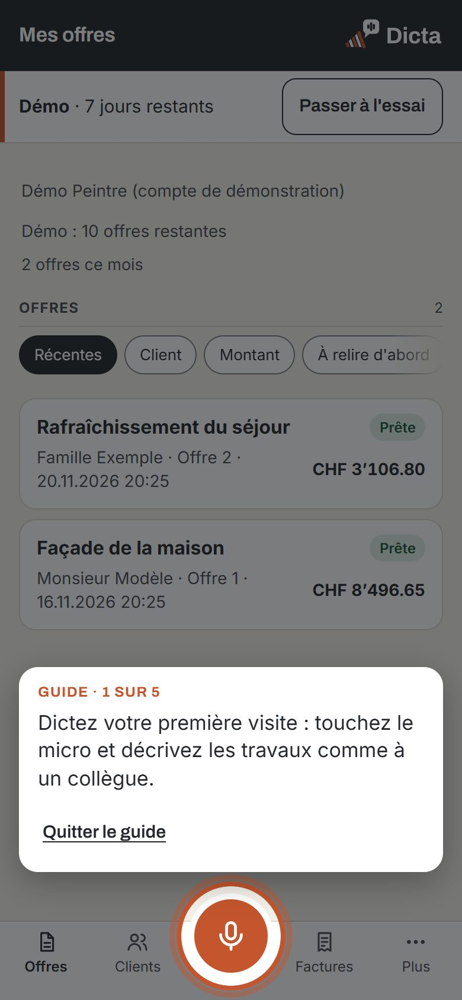
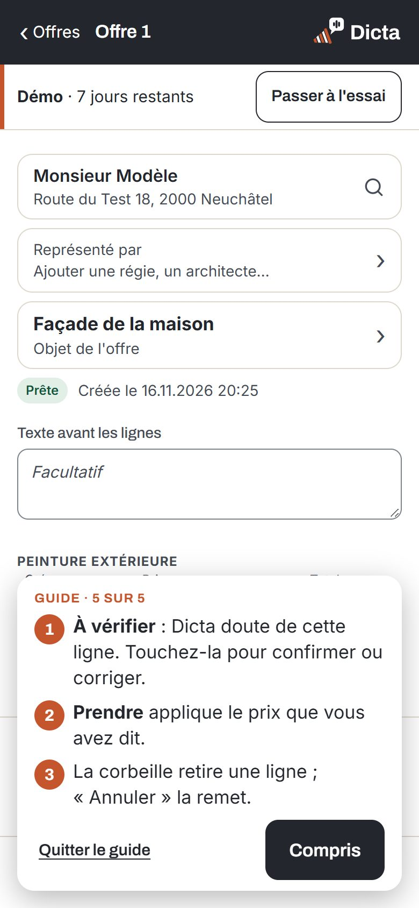
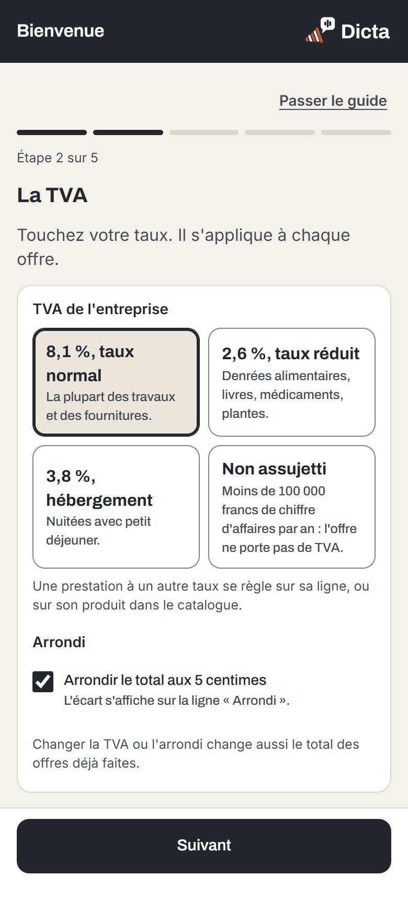
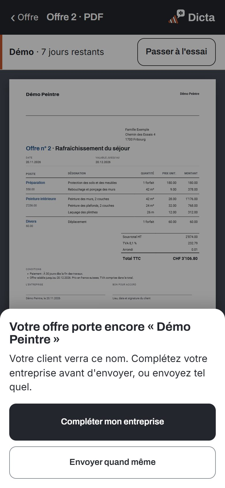
1. L'écran de fin de démo
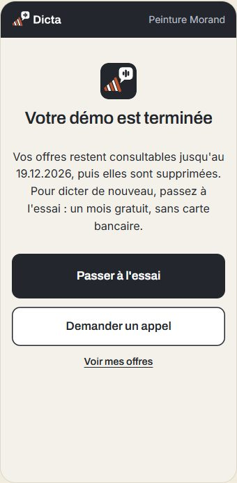
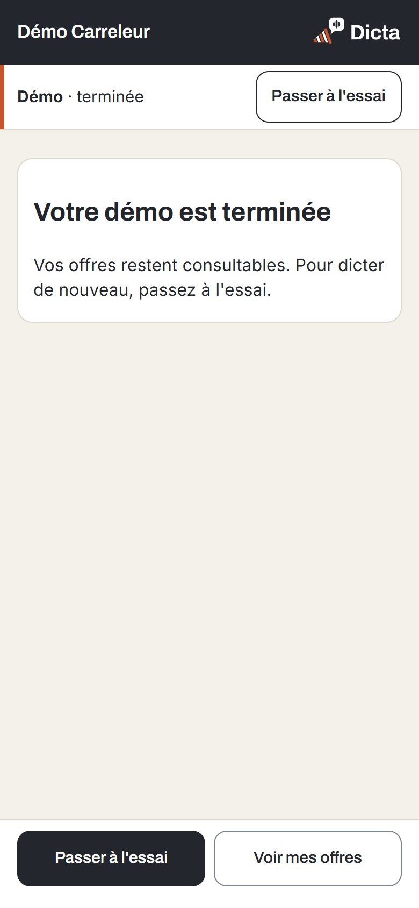
- « jusqu'au 19.12.2026, puis elles sont supprimées » : aucune suppression n'existe (lot 8 de l'administration non livré) ;
- « un mois gratuit, sans carte bancaire » : l'essai d'aujourd'hui compte 10 offres, le mois gratuit appartient au lot B ;
- « Demander un appel » : remplacé par « Aide et questions » du chantier support (T11), qui arrive avec le lot 10.
E1 · L'écran de fin sans date de suppression, sans mois gratuit, sans « Demander un appel » pour l'instant
2. La bienvenue du commercial
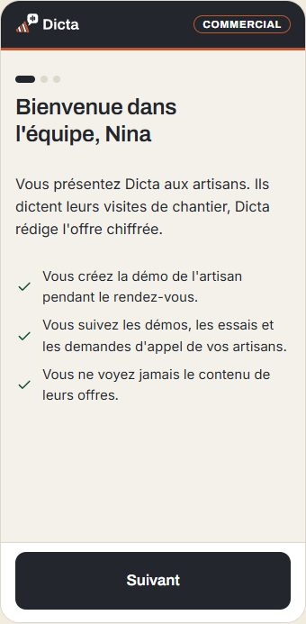
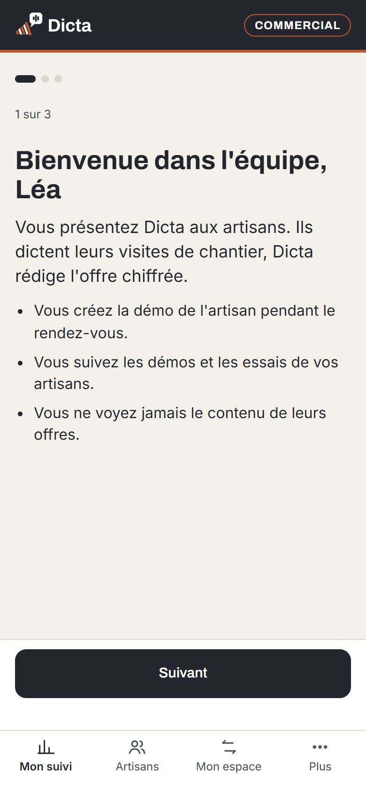
E2 · La bienvenue sans « les demandes d'appel », avec puces et « 1 sur 3 »
3. Le guide du commercial : plus de rond +
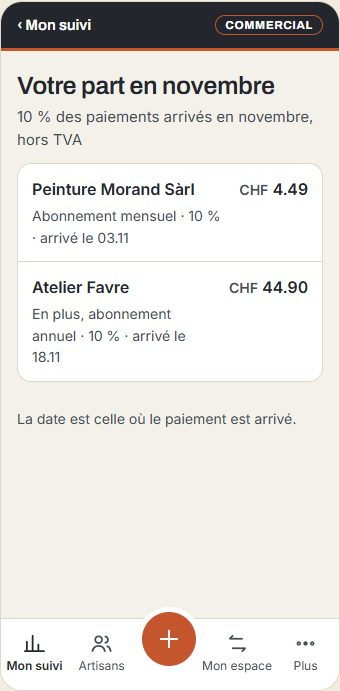
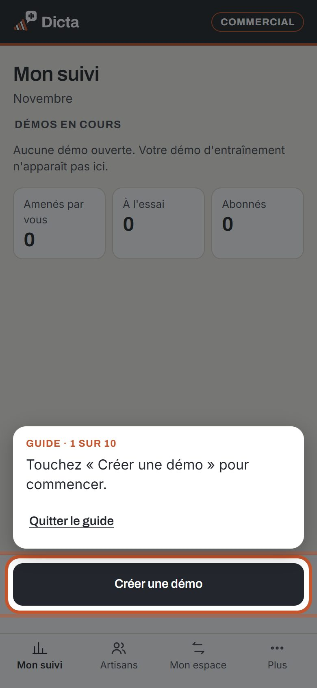
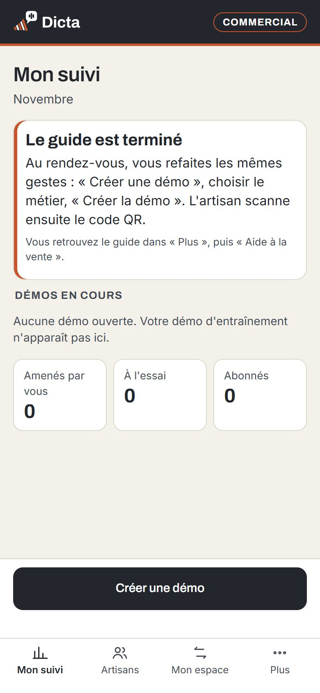
- g.rond : « Touchez le rond + pour créer une démo » devient « Touchez « Créer une démo » pour commencer » ;
- g.fin.texte : « le rond +, le métier, « Créer la démo », puis l'artisan scanne le code » devient « « Créer une démo », choisir le métier, « Créer la démo ». L'artisan scanne ensuite le code QR ».
E3 · Le guide montre « Créer une démo » au lieu du rond +
4. La page du code QR de la démo d'entraînement
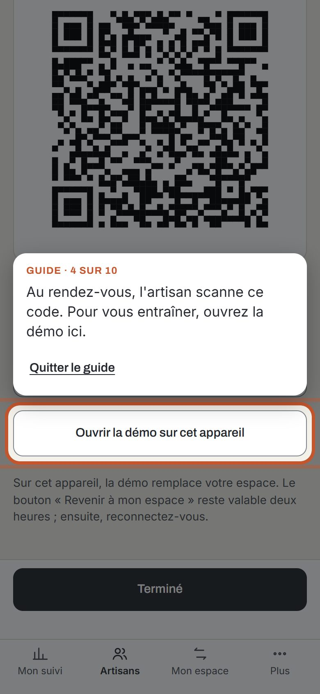
- la démo s'ouvre par un bouton (un formulaire), plus par un lien : un lien qui change de session et écrit en base est interdit par les règles du projet ;
- « Revenir à mon espace » vaut deux heures. Sans limite, un téléphone tendu à un prospect lui aurait ouvert l'espace du commercial. D'où la phrase « Sur cet appareil, la démo remplace votre espace. Le bouton « Revenir à mon espace » reste valable deux heures ; ensuite, reconnectez-vous. »
E4 · Le bouton « Ouvrir la démo sur cet appareil » et le retour valable deux heures
5. Trois démos d'entraînement par 24 heures
E5 · Trois démos d'entraînement en 24 heures au plus
6. L'aide à la vente : deux rubriques absentes
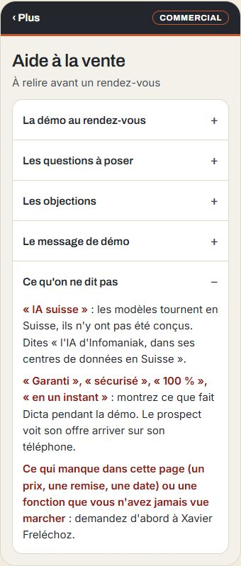
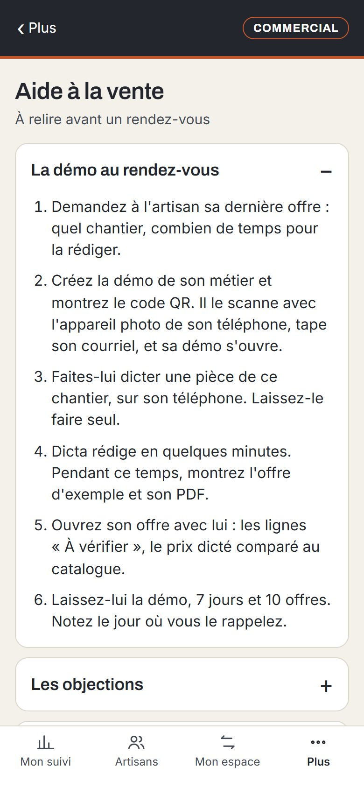
docs/terrain/2026-11-18_questions-adequation.md, plus « Voyez-vous un ou deux collègues à qui la montrer ? ». Elles sont écrites pour tes entretiens de découverte. La sixième demande au prospect à partir de quel prix l'application lui paraîtrait trop chère : pour un commercial qui vend, elle est à revoir.E6 · Le contenu de « Les questions à poser »
7. Deux de tes phrases dans « Les objections »
Elles sont dans le code avec tes mots. Le relecteur les a jugées bloquantes : aucune mesure ne les appuie dans le dépôt. Je les signale une fois.
k.o3.r : « Dans tous les tests effectués, 99 % des lignes rédigées sont correctes par rapport à ce qui a été dit. Une information absente vous est transmise. »
E7a · La phrase des 99 %
k.o4.r : « Vous pouvez facilement importer depuis vos dernières factures le catalogue de vos produits usuels. »
E7b · La phrase de l'import depuis les factures
8. « Vos prix », cinquième étape de la mise en route
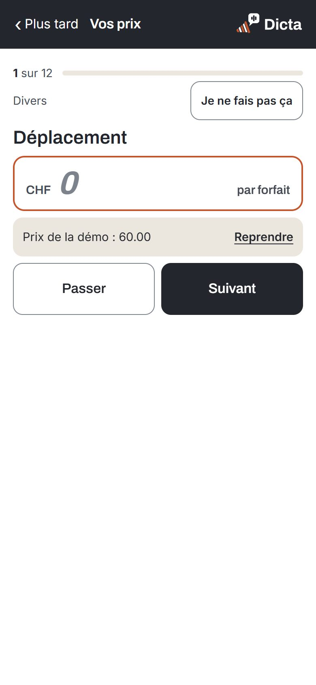
E8 · « Vos prix » dans la mise en route
9. Les mots « Suivant » et « Plus tard »
E9 · « Suivant » et « Plus tard »
Les lots 9 et 10 : absents du code
Rien à décider ici : ces écrans attendent d'autres chantiers.
Lot 9 : la part du commercial
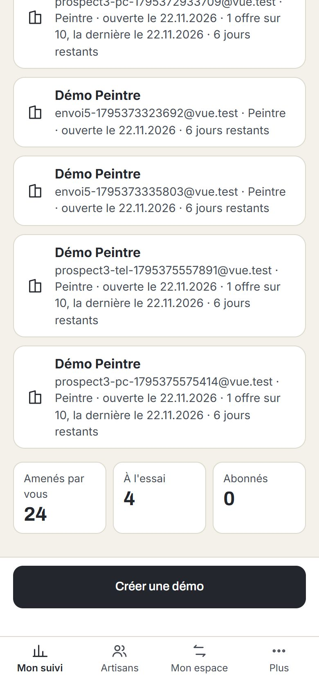
Lot 10 : « Aide et questions »
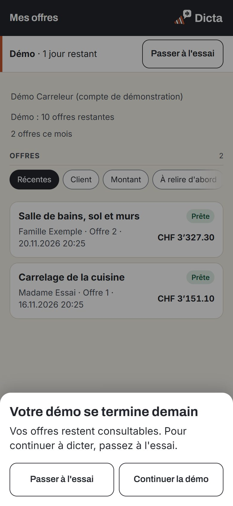